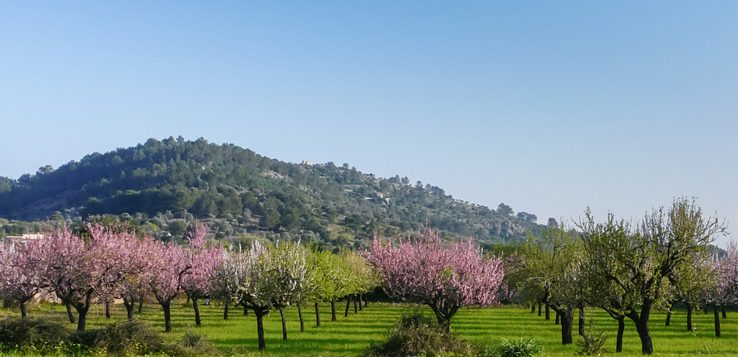
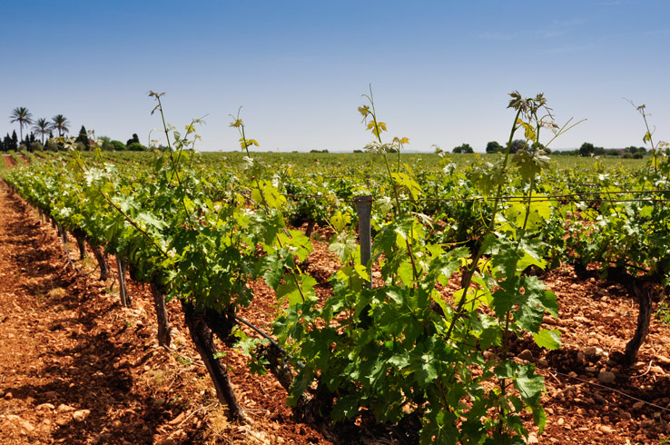
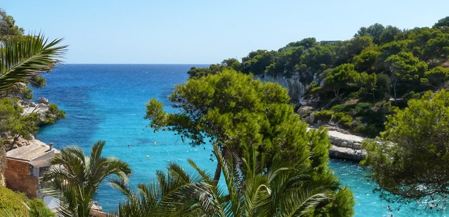
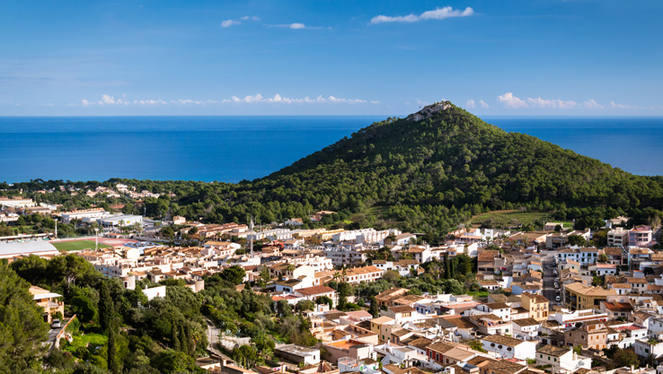
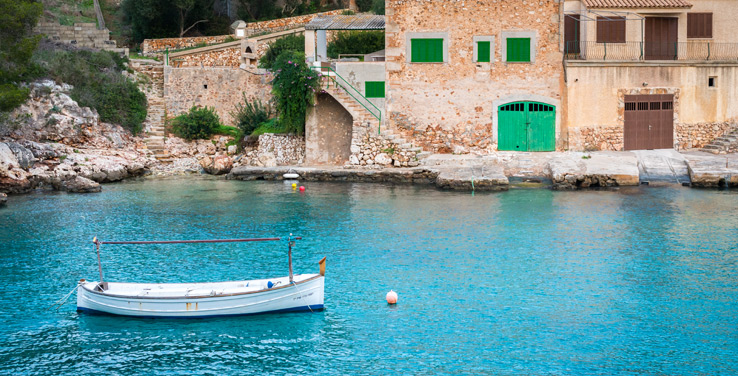
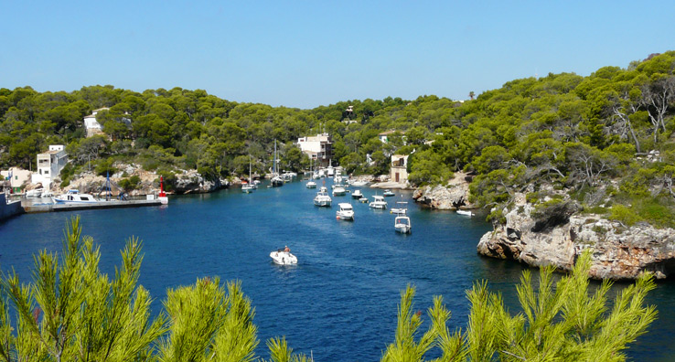
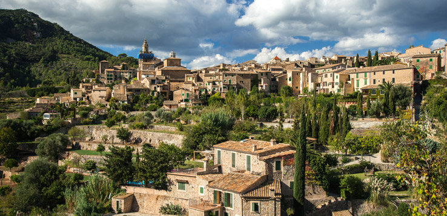

Die Inselmitte von Mallorca
Sehenswürdigkeiten in der Inselmitte Mallorcas sind u.a. das Freilichtmuseum Els Calderers, die Windmühlen bei Sa Pobla und die Stadt Inca.
Plà de Mallorca, oder kurz auch Es Plà – dieser Name bedeutet schlicht „die Ebene“. Und eine Ebene ist Mallorcas Mitte tatsächlich: im Nordwesten begrenzt von der Serra de Tramuntana, im Südosten durch die Serra de Llevant. Dazwischen bleiben etwa
600 km² flaches, fruchtbares Land. Das Gebiet wird wegen seiner großen landwirtschaftlichen Bedeutung von jeher auch die „Kornkammer Mallorcas“ genannt.
Ruhig geht es hier zu. Nur selten verlieren sich Urlauber für längere Zeit so weit ins Landesinnere. Der Haupttourismus findet in den Küstenregionen statt, denn die Menschen zieht es ans Meer. Dabei bietet Mallorcas
Mitte sehr viel Charme und geheimnisvolle Schönheit. Gerade für kulinarische Genießer ist diese Region ein Paradies.
Angebaut werden vor allem Gemüse, Kartoffeln, Mais, Reis und Getreide, aber auch Mandeln und Oliven. Endlose Felder, Wiesen und Mandelhaine prägen das Landschaftsbild. Die Mallorquiner hier sind spezialisiert
auf Landwirtschaft und Handwerk. Das merkt man beim Besuch der Dörfer, denn hier scheint die Zeit langsamer zu laufen; Feld- und Erntearbeiten, wie schon vor etlichen Jahren, bestimmen den Tagesablauf.
Der Osten von Mallorca
Der Osten Mallorcas hat an Sehenswürdigkeiten zahlreiche Buchten, Strände und diverse schöne Küstenorte zu bieten.
Der Osten Mallorcas wirkt wie eine Kompaktversion der ganzen Insel. Auf dieser kleinen Fläche findet man alle geographischen Charakteristika, welche die Insel im Gesamten ausmachen. Berge, Täler, Sandstrände, Felsbuchten,
Städte und Dörfer – die Region Llevant, zu deutsch Osten, verzaubert mit ihrer Vielfalt wie kein anderes Gebiet Mallorcas.
Nirgendwo sonst sind die Gegensätze zwischen idyllischer Natur und Pauschaltourismus deutlicher und nirgendwo sonst ergänzt sich beides so nah beieinander. Reich besiedelte Touristenorte und Urlaubsattraktionen
reihen sich ein neben verlassenen Buchten und ruhigen Küsten.
Zentrales landschaftliches Merkmal ist die Serra de Llevant, das östliche Küstengebirge. In seiner Größe und seinen Formationen zwar nicht so beeindruckend wie die Serra de Tramuntana im Norden, ist es dennoch ein reizvolles Gebiet für Wanderungen,
Radtouren und Ausflüge in die Natur.
Der Süden von Mallorca
Sehenswürdigkeiten im Süden Mallorcas sind u.a. das Cap de Ses Salines, die Salinenfelder, der botanische Garten Botanicactus und ein Ausflug zur Insel Cabrera.
Migjorn – so heißt die südliche Inselregion, übersetzt steht das für Süden und den Südwind. Sanft wie der Südwind Mallorcas gestaltet sich auch der Süden der Insel. Hier fehlt es an spektakulären Sehenswürdigkeiten genauso wie an großen Städten und
Ferienzentren.
Cala Figuera heißen eine malerische Bucht und das gleichnamige Dorf mit etwa 700 Einwohnern an Mallorcas Südostküste. Cala Figuera gilt als das schönste Fischerdorf der Insel. Die zweigeteilte Bucht ähnelt mit
ihrer Steilküste einem Fjord und reicht tief ins Land hinein. Sie war ehemals der Hafen von Santanyi. Der Naturhafen wird heute noch als Fischerhafen genutzt. Das Hafenbecken wird gesäumt von Fischerbooten und Bootsgaragen. Die Fischerhäuser wurden
direkt auf die Felsen gebaut.
Cala Figuera hat sich seinen ursprünglichen Charme erhalten können. Autos dürfen im Hafen nicht fahren, große Massenhotelanlagen fehlen. Touristen besuchen die Bucht gern, aber nicht übermäßig, denn einen eigenen
Sandstrand gibt es nicht. Badestrände erreicht man in der Nähe zum Beispiel in Cala Santanyi, Cala Mondrago oder Cala Llombards. Einige Restaurants laden in Cala Figuera zum Verweilen ein, empfehlenswert ist besonders fangfrischer Fisch.
Der Westen von Mallorca
Der Westen der Insel besticht vorallem durch seinen Gebirgszug Serra de Tramuntana, romantische Bergdörfer, die Schlucht Torrent de Pareis und zahlreiche schöne Aussichtspunkte.
Mallorcas Westen unterteilt sich in zwei Regionen. Der Südwesten ist eine der exklusivsten Wohngegenden der Insel, viele Prominente haben sich hier an der Küste niedergelassen und wohlhabende Villen und Anwesen prägen vielerorts das Bild.
Der Nordwesten hingegen steht ganz im Zeichen des wilden Tramuntana-Gebirges und bietet den absoluten Kontrast mit seiner beeindruckenden Natur. Das Landschaftsbild ist abwechslungsreich. Mal sieht man nichts als
bewaldete Felsen, mal findet man sich zwischen üppigen Obstplantagen.
 Malerische Bergdörfer durchziehen das Tramuntanagebirge, das über weite Strecken unbesiedelt ist. So trägt das Dorf Fornalutx in der Nähe von Soller die mehrfache Auszeichnung des schönsten Dorfes Mallorcas. In
den kleinen Gassen wurden die Häuser mit Blumen liebevoll herausgeputzt. Einen Bummel durch die engen Gassen sollte man sich auf keinen Fall entgehen lassen, wenn man auf Wandertour in dieser Gegend ist.
Malerische Bergdörfer durchziehen das Tramuntanagebirge, das über weite Strecken unbesiedelt ist. So trägt das Dorf Fornalutx in der Nähe von Soller die mehrfache Auszeichnung des schönsten Dorfes Mallorcas. In
den kleinen Gassen wurden die Häuser mit Blumen liebevoll herausgeputzt. Einen Bummel durch die engen Gassen sollte man sich auf keinen Fall entgehen lassen, wenn man auf Wandertour in dieser Gegend ist.